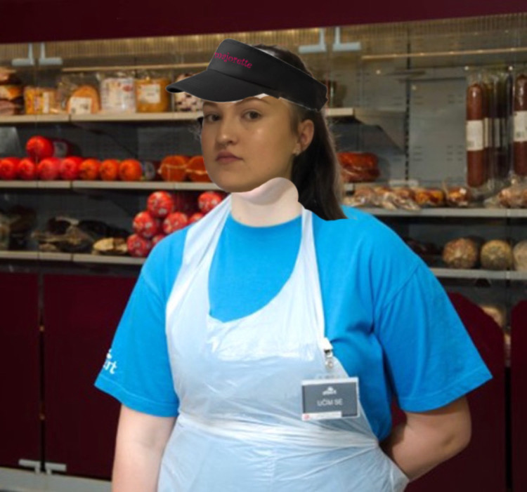

Tato stránka vznikla kvůli jedinému člověku, ženě a brigádnici v jednom, která je spíše známa jako LEGENDA toho nejskvostnějšího města na světě, Šumperk. Možná se teď divíte jak se někdo v tak „úžasném" městě jako je Šumperk můžu stát legendou? Je to velmi prosté, stačí jít na brigádu do místní pobočky supermarketu Albert. Ovšem, pouze tam jít a doplňovat zboží do regálů nestačí, musíte v sobě probudit víc než co v sobě probudí pouhopouhý řadový brigádník, kterých se tam již vystřídali stovky. Musíte mít, jak se říká trochu vyšší ambice.
Přesně s takovým nadhledem se naší LEGENDĚ podařilo vystoupat v pomyslné hierarchii tohoto skvostného supermarketu až na samotnou špičku ledovce (metafora). Když tato LEGENDA jde na směnu, všichni místní lidé se ohlížejí a strachem se jim zrychluje tep a zvyšuje tlak, v tvářích blednou, ovšem neomdlévají. Když pak dorazí na prodejnu a projde dveřmi, všichni zákazníci, zaměstnanci a uklízečky;) zbystří a nevěří. Připadají si jakoby do prodejny vstoupil Jěžíš samotný nebo snad dokonce Alláh, a nebo taky ten v koho věří židi, což sem tak nějak zapomněl, jak se jmenuje LOL.
Všem chřadne krev v žilách, ovšem naše LEGENDA zůstává klidná a pokračuje na své pracoviště. Převlékne se, hodí vlasy do culíku, staví se u manažerky pro úkoly, a tak začíná její šichta. Projde se prodejnou, aby se ujistila zda je vše v pořádku. Pokud snad ne, vydá ze sebe vše proto, aby to správně bylo, a když říkám všechno, myslím tím skutečně všechno. Jednou se takhle po ránu prošla po prodejně a zjistila, že v oddělení ovoce nebyli doplněny banány. Rozhodla se neztrácet čas a nelámat si hlavu s tím, kdo byl ten hříšník, který banány toto osudné ráno nedoplnil. Vydala se proto okamžitě do skladu, kde se ovšem vyplnily její nejtemnější představy. Banány nebyly ani na skladě. Běžný brigádník by si řekl: „Hold dnes banáne prodávat nebudeme, co se stane?“, ovšem naše LEGENDA to takhle nemohla nechat. Podívala se na prázdnou krabici od banánu na niž zjistila původ tohoto populárního exotického ovoce. Ukázalo se, že banány pochází z Kolumbie. Rozhodla se proto tuto katastrofální situaci vyřešit radikálním krokem. Zjistila, že má dostatek času, před tím než bude prodejna otevřena, a proto se rozhodla, že do Kolumbie na vlastních nohách pro ty nejčerstvější banány doslova zaběhne. Vydala se tak na strastiplnou cestu přes oceán na které, jako Ježíš samotný běžela po vodě. Cesta ji trvala pouhé čtyři minuty a dvacet vteřin (4:20). Vzala tolik krabic banánu kolik jen mohla, poté si šňupla místního bílého prášku a vydala se na cestu zpátky, která ji trvala pouhých třicet čtyři vteřin, díky čemuž se stala první člověkem, kterému se podařilo překonat Atlantik pod jednu minutu, což je dle mého názoru více pozoruhodné než přistání na Měsíci.
Možná se Vám může zdát, že tento příběh není úplně reálný a že některé jeho pasáže jsou vymyšlené, je ovšem důležité si uvědomit, že magický realismus vznikl právě v Kolumbii. Jedna skutečnost je ovšem naprosto jasná. Zvěsti o tomto neuvěřitelném příběhu daly základ pro zrod Šumperské LEGENDĚ. Ovšem naprostá obětavost není jediný důvod proč se hlavní postava tohoto příběhu stala LEGENDOU. Představte si následující situaci. Bydlíte v Šumperku, takže Váš příjem není nijak vysoký, a tak se nedostane ani na průměrnou mzdu, ovšem nakoupit si jít musíte. Proto se rozhodne, že po dlouhém pracovním týdnu bude nejlepší, když si zajdete nakoupit v neděli, když jsou největší slevy. Protluče se tak hordami důchodců, jejichž nejoblíbenější událost týdne také nastala a začnete nakupovat. V tom ovšem spatříte místní tlupy čmoudů, jak se pokouší toho ukrást co nejvíce. Je lehké tyto „lidi“ na první pohled odsoudit, ale představte si, že se narodíte jako cikán, což už samo o sobě je naprostá katastrofa, natož se narodit jako cikán v Šumperku.
Před tím než na prodejně začala pracovat naše legenda, tak se jednalo o zcela neúnosný problém, který nikdo nedokázal vyřešit. Ztráty na zboží byly každý týden tak enormní, že jednu dobu dokonce vedení přemýšlelo i nad uzavřením prodejny. V tom se ovšem na scénu dostává naše LEGENDA, kterou její pověst o výletu do Kolumbie předchází. Je také potřeba říct, že neskutečně rychlé nohy nejsou jediná nadlidská síla, kterou naše LEGENDA disponuje, neboť její zrak je stejně tak ostrý jako zrak sokolí. Zkrátka pokud je na směně, nic jí neunikne, nikdo díky její pověsti ani nepomyslí na to, že by snad mohl něco ukrást. Dokonce i běžně odvážní čmoudové z ní mají takový respekt, že se pro vlastní bezpečí rozhodli přestěhovat do Bruntálu, kde se budou podílet na zdejší stovky let staré tradici a to těžbě bahna. Dalo by se tak říct, že naše legenda byla úspěšnější ve vyhánění cikánů ze Šumperka než nacisti za války.
V tomto příběhu toho zatím o LEGENDĚ zaznělo mnoho, možná si teď myslíte, že není možné aby takovýto člověk existoval. Ovšem když se podíváte na tržby zdejší prodejny Albert, tak si musíte pomyslet, že nad touto prodejnou někdo drží ochranou ruku, neboť se jedná o jednoznačně nejlépe prosperující obchod s potravinami široko daleko. Od doby co se na této prodejně LEGENDA objevila, tato prodejna jenom vzkvétá a to až na takovou úroveň, že ostatní prodejny zvažují ukončení provozu. A tak v tomto příběhu zůstává pouze jediná otázka , která nebyla doposud zodpovězena, kdo se vlastně schovává pod označením LEGENDA? Myslím, že je načase, aby tato otázka byla zodpovězena. Jak jste určitě z příběhu již vypozorovali, tak se jedná o ženu a bystřejší z Vás si mohli domyslet i to, že se jedná o mladší. Tato žena je samozřejmě rodačkou ze Šumperka, jak taky jinak, pouze v Šumperka se rodí lidé s nadlidskými schopnostmi, například být schopen chlastat od rána od devíti hodin v místní nádražní hospodě a vydržet to celý den, bez toho aniž by Vás přejel kombajn je skutečně nadlidský výkon (tady mluvím z vlastní zkušenosti). Jak ale zní jméno této LEGENDY? Dovolte mi Vám představit jedinečnou a na hrudníku mimořádně obdarovanou ADÉLU GRMELOVOU!!! Jejíchž zasraně nudné příběhy z Alberta v Šumperku inspirovaly celý tento příběh. Kdykoliv kdokoliv z nás ve třídě slyší slovo Albert, tak se tak nasereme, že si chceme prohnat kulku hlavou. Je to horší než kdyby Vás vyslýchali nacisti, je to mentální šikana to poslouchat , je to týrání nevinných. Nikoho to nezajímá!!!!!!!! V každé hodině je to pořád jenom Albert, óóó Albert, to takhle jednou v Albertu, hmmm můj milovaný Albert, jó Albert jednička v čerstvosti, Albert neporazitelná cena týdne ahhhhhhhhhhhh. Nakonec je potřeba říct, že tento příběh není myšlený jako urážka, jedná se pouze o výplod mojí fantazie, když sem se po večerech nudil a myslím si, že je také potřeba říct, že Adéla je jedna z těch lepších v naší třídě, teda mě to aspoň tak připadá.
